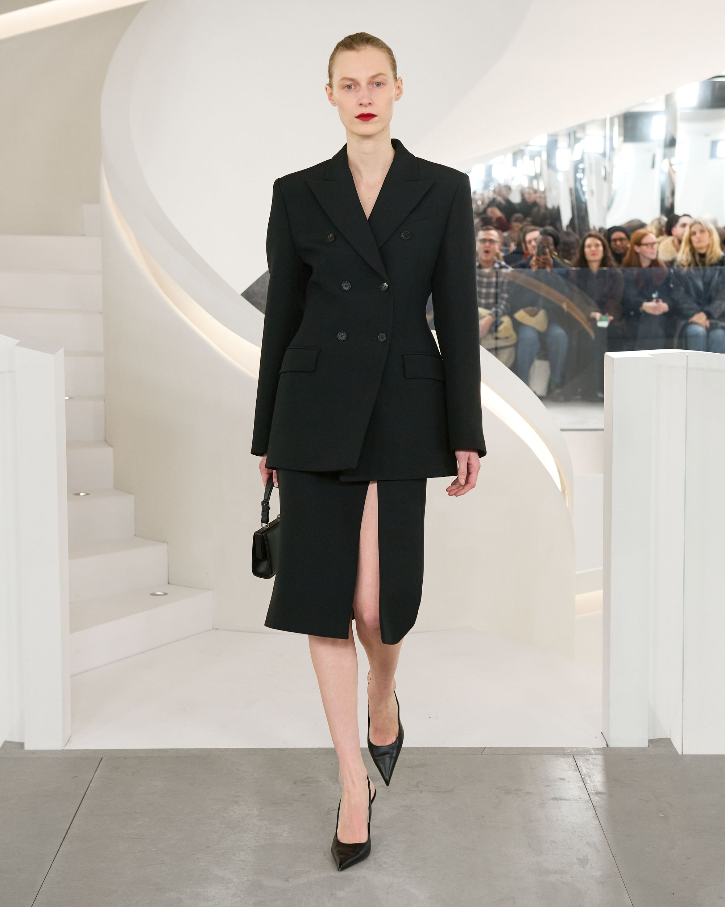
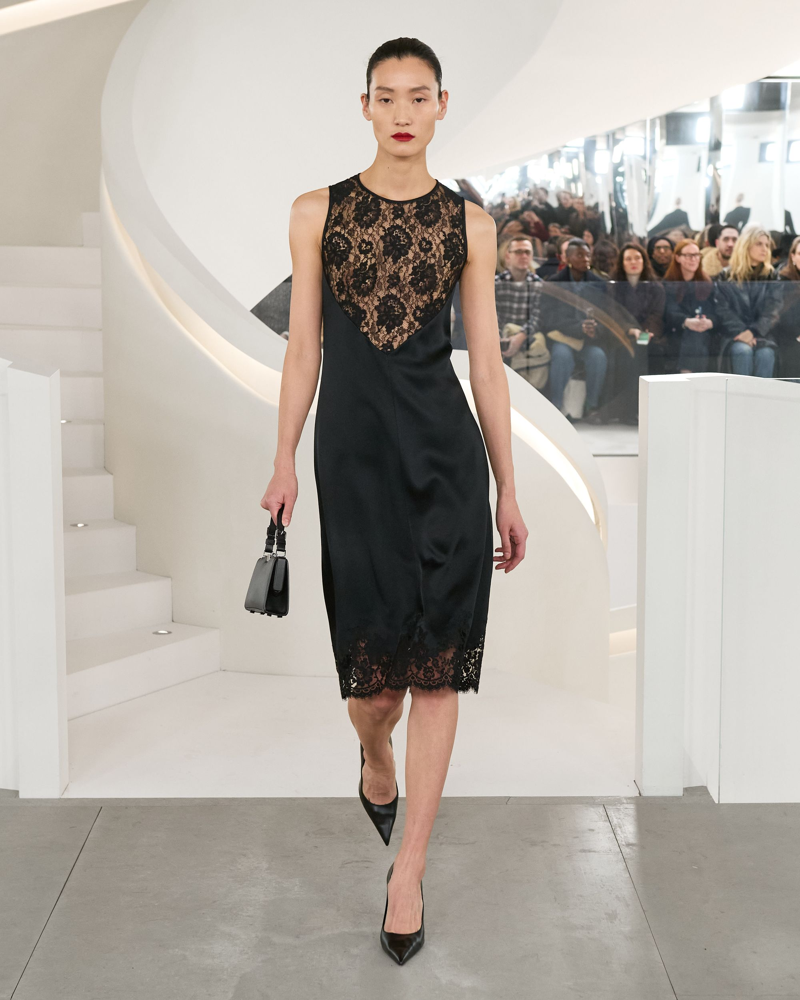
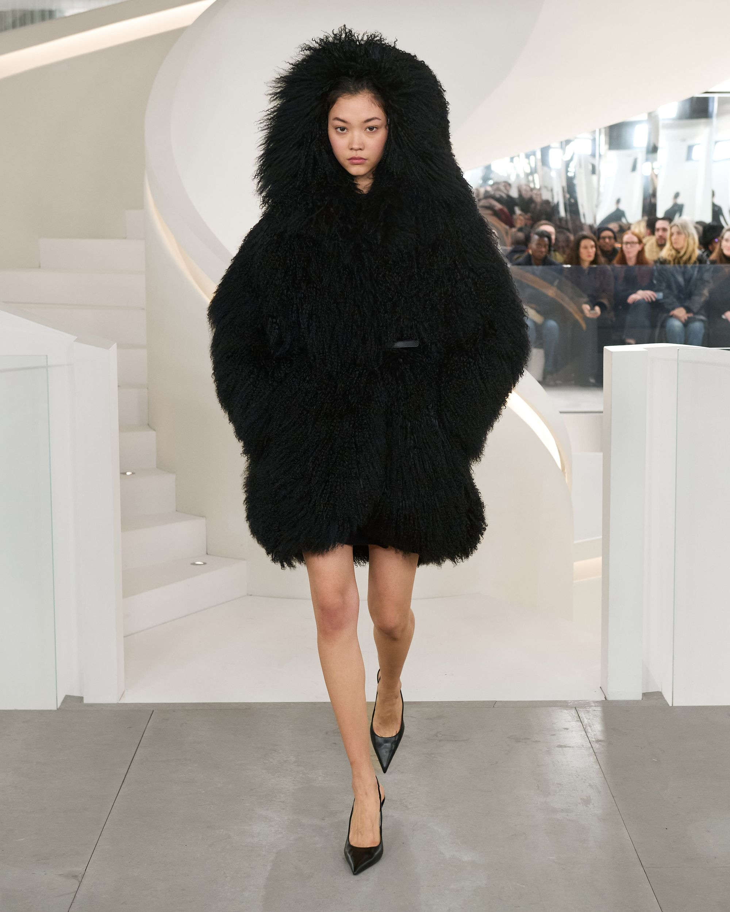
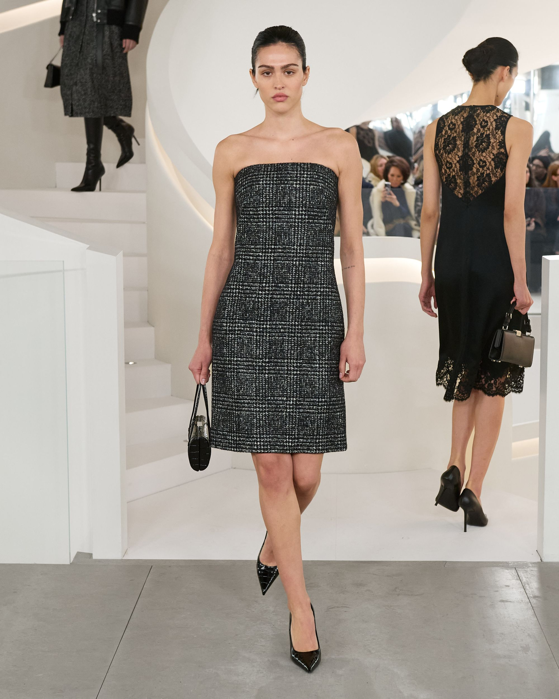
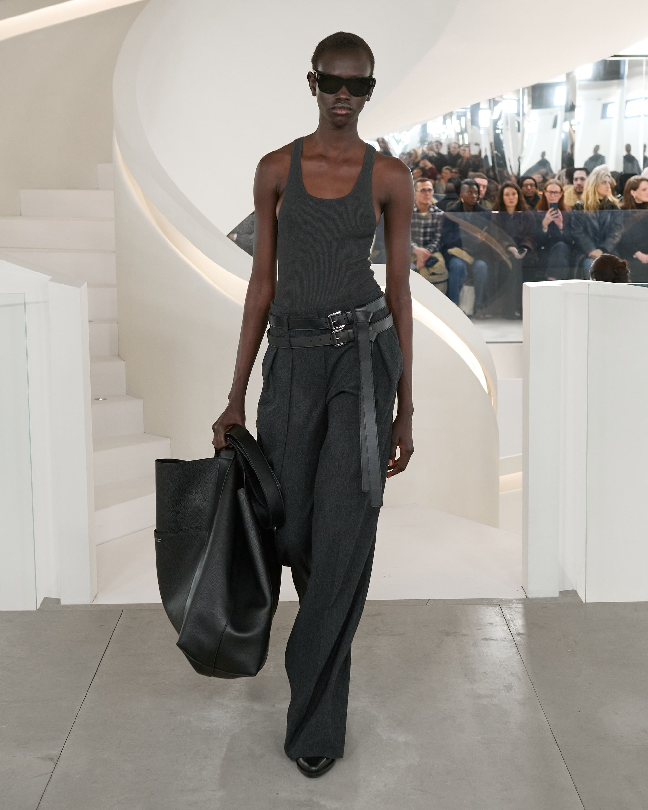
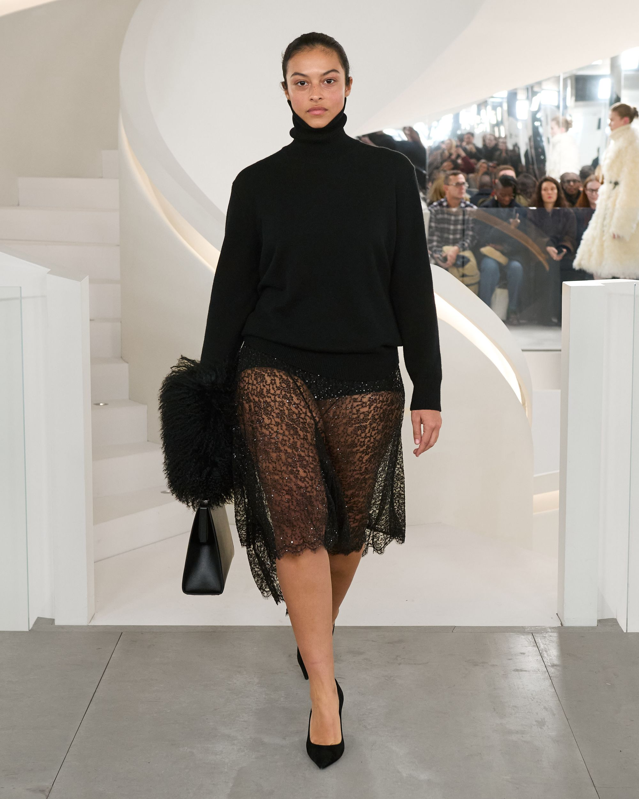

FALL/WINTER 2024
TIMELESS...THE SHARP SCULPTURAL TAILORING AND LANGUID LINGERIE DRESSING OF THE
‘30S JUXTAPOSED WITH THE STREAMLINED LUXURY OF THE ‘90S AND THE LAID-BACK CASUAL
ATTITUDE OF TODAY...COVER/UNCOVER...SENSUOUS, BIAS-CUT SHAPES IN SATIN AND LACE
PAIRED BACK TO DELUXE PUFFERS AND SHARPLY TAILORED JACKETS AND COATS...LUXE
SPORTSWEAR...RELAXED TROUSERS AND SHORTS...BIAS-CUT DENIM, RUGGED BOMBERS AND
INDULGENT HOODIES...DRAMATIC LEATHER AND SHEARLING OUTERWEAR...
THE ARCHITECTURAL EDGE OF ASYMMETRY IN SKIRTS AND DRESSES...INVESTMENT FLANNELS
AND LUXURIOUS CASHMERES...RICH TEXTURAL TWEEDS...WARM SHADES OF CAPPUCCINO AND CHOCOLATE...
TONES OF BANKER, CHARCOAL AND BLACK...CRISP MIDNIGHT AND IVORY...DUSTY MAKEUP
TINTS OF SHELL AND BLUSH... SLEEK FOOTWEAR, FROM THE STREAMLINED PUMP AND STILETTO BOOT TO
MINIMALIST OXFORDS AND LOAFERS...PROPORTION PLAY OF HANDBAGS, FROM CAPACIOUS TOTES TO
STRUCTURED TOP-HANDLE SHAPES...THE NEW CHAIN HANDLE MANHATTA BAG...OPULENT SIMPLICITY...
MICHAEL KORS COLLECTION FALL/WINTER 2024
‘30S JUXTAPOSED WITH THE STREAMLINED LUXURY OF THE ‘90S AND THE LAID-BACK CASUAL
ATTITUDE OF TODAY...COVER/UNCOVER...SENSUOUS, BIAS-CUT SHAPES IN SATIN AND LACE
PAIRED BACK TO DELUXE PUFFERS AND SHARPLY TAILORED JACKETS AND COATS...LUXE
SPORTSWEAR...RELAXED TROUSERS AND SHORTS...BIAS-CUT DENIM, RUGGED BOMBERS AND
INDULGENT HOODIES...DRAMATIC LEATHER AND SHEARLING OUTERWEAR...
THE ARCHITECTURAL EDGE OF ASYMMETRY IN SKIRTS AND DRESSES...INVESTMENT FLANNELS
AND LUXURIOUS CASHMERES...RICH TEXTURAL TWEEDS...WARM SHADES OF CAPPUCCINO AND CHOCOLATE...
TONES OF BANKER, CHARCOAL AND BLACK...CRISP MIDNIGHT AND IVORY...DUSTY MAKEUP
TINTS OF SHELL AND BLUSH... SLEEK FOOTWEAR, FROM THE STREAMLINED PUMP AND STILETTO BOOT TO
MINIMALIST OXFORDS AND LOAFERS...PROPORTION PLAY OF HANDBAGS, FROM CAPACIOUS TOTES TO
STRUCTURED TOP-HANDLE SHAPES...THE NEW CHAIN HANDLE MANHATTA BAG...OPULENT SIMPLICITY...
MICHAEL KORS COLLECTION FALL/WINTER 2024
LOOKBOOK






MICHAEL KORS COLLECTION
SPRING/SUMMER 2024 RUNWAY